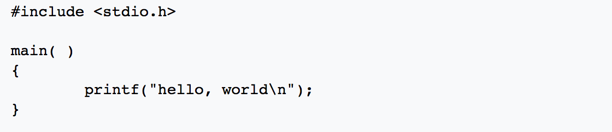
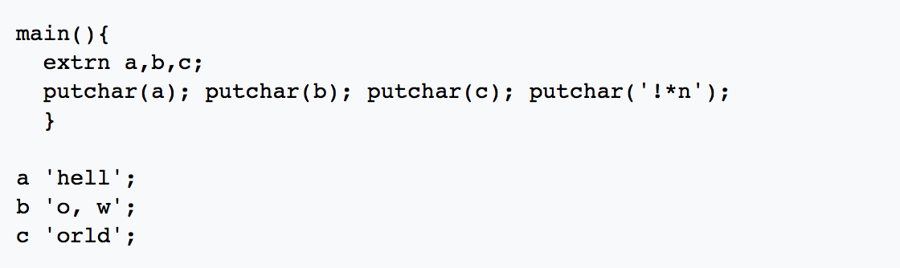

History
While small test programs have existed since the development of programmable computers, the tradition of using the phrase "Hello, world!" as a test message was influenced by an example program in the seminal book The C Programming Language.
The example program from that book prints "hello, world" (without capital letters or exclamation mark), and was inherited[citation needed] from a 1974 Bell Laboratories internal memorandum by Brian Kernighan, Programming in C: A Tutorial:

The C version was preceded by Kernighan's own 1972 A Tutorial Introduction to the Language B,[5] where the first known version of the program is found in an example used to illustrate external variables:

Variations
There are many variations on the punctuation and casing of the phrase.
Variations include the presence or absence of the comma and exclamation mark, and the capitalization of the 'H', both the 'H' and the 'W', or neither.
Some languages are forced to implement different forms, such as "HELLO WORLD", on systems that support only capital letters, while many "hello, world" programs in esoteric languages print out a slightly modified string. For example, the first non-trivial Malbolge program printed "HEllO WORld", this having been determined to be good enough.
from Wikipedia